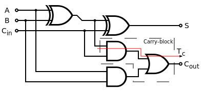

A 4-bit full adder
In this tutorial, you'll see how to create a small 4-bit full adder, starting from scratch. The full adder is a logical circuit with 3 inputs and 2 outputs. It's built by combining two half-adders with a logical OR port, so we must first create our half adder. An half adder sums two bits, A and B, and gives two outputs, S and C. S is the sum and C is the carry. The half adder differs from the full adder because it doesn't care about the previous carry.
Here is the truth table of a half adder:| Inputs | Outputs | ||
|---|---|---|---|
| A | B | S | C |
| 0 | 0 | 0 | 0 |
| 0 | 1 | 1 | 0 |
| 1 | 0 | 1 | 0 |
| 1 | 1 | 0 | 1 |
The diagram is realized by using an AND gate combined with a XOR gate
We could represent the circuit using a BLIF file, but it's not necessary since we can code directly the full adder.
Now that we have our half adder, we can build the full version, which actually accounts for values carried in besides out. The logic diagram of a full adder should look like this:

But we are more interested in the truth table, which is:| Inputs | Outputs | |||
|---|---|---|---|---|
| A | B | C_IN | S | C_OUT |
| 0 | 0 | 0 | 0 | 0 |
| 0 | 0 | 1 | 1 | 0 |
| 0 | 1 | 0 | 1 | 0 |
| 0 | 1 | 1 | 0 | 1 |
| 1 | 0 | 0 | 1 | 0 |
| 1 | 0 | 1 | 0 | 1 |
| 1 | 1 | 0 | 0 | 1 |
| 1 | 1 | 1 | 1 | 1 |
#1-bit adder
#Data bits: 1
.model ADDER
.inputs a b cin
.outputs o cout
.names a b k
10 1
01 1
.names k cin o
10 1
01 1
.names a b cin cout
11- 1
1-1 1
-11 1
.end
Ok, but what about the 4 bit adder? Do I have to make such a big BLIF file with loads of truth tables?
No! We simply reuse the 1-bit adder 4 times! The magic happens by using the .subckt
keyword, which allows
you to use a preloaded model you load with the .search keyword. Be aware that the model
must be in the
same directory. So the 4-bit adder would look like this:
#4-bit adder
#Data bits: 4
.model ADDER4
.inputs a3 a2 a1 a0 b3 b2 b1 b0 cin
.outputs o3 o2 o1 o0 cout
#C[x] is a temporary variable, used for the carry-out of the addition
.subckt ADDER a=a0 b=b0 cin=cin o=o0 cout=C0
.subckt ADDER a=a1 b=b1 cin=C0 o=o1 cout=C1
.subckt ADDER a=a2 b=b2 cin=C1 o=o2 cout=C2
.subckt ADDER a=a3 b=b3 cin=C2 o=o3 cout=cout
.search ADDER.blif
.end
Now we can simulate it to see if it's correct.
UC Berkeley, SIS 1.3.6 (compiled 2017-10-27 16:08:57)
sis> read_blif ADDER4.blif
sis> sim 0 0 0 1 0 0 0 1 0
Network simulation:
Outputs: 0 0 1 0 0
Next state:
sis> sim 0 0 1 0 0 0 1 0 0
Network simulation:
Outputs: 0 1 0 0 0
Next state:
sis>
Ok! It works!